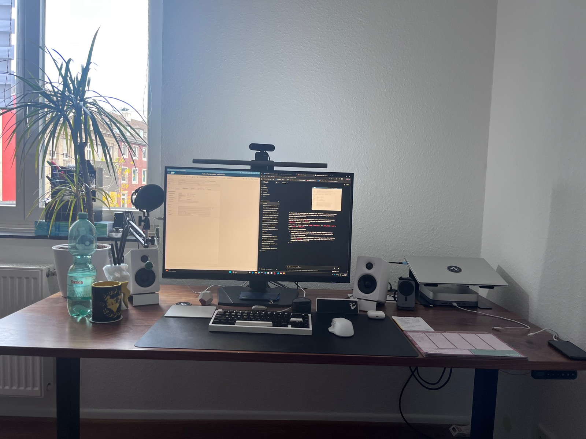

OneHumanity Labs
One Planet,
One Humanity
An independent lab from Aachen. We build robots, make games and tools, and design 3D models for printing. Different projects, one attitude: open, local and made for people.
How we work
One step at a time.
Whether robot, game or keycap – every project runs through the same three stages, and a stage only counts as done when it works and is written down.
-
01
Concept
What should it do, who is it for, where are its limits? The idea is written down and thought through before anything is built.
-
02
Prototype
Design, print, solder, program, test – in our own workshop in Aachen. Early versions are shown openly, including what does not work yet.
-
03
Finish
A step is finished when it runs and is documented: a device in daily use, a playable game, a print file that works.
What we stand for
- Open Code, files and guides are published wherever possible.
- Local No account, no cloud – our devices and tools work on their own.
- Human Made for people, not for metrics.
Robotics
Machines that accompany people.
Our biggest projects: a modular robot and a drone that can drive.
Games
Games we would want to play ourselves.
Built in Godot, free to play, with open source code.
Tools
Tools for the desk and for everyday work.
Devices and inventions that make work a little better – built, tested and documented.
3D design
Designed, printed, shared.
Practical things from the 3D printer – free files on MakerWorld and Cults3D, some also ready-made in the shop.
The workshop
Where it all comes together.
3D printing, electronics, soldering station, CAD and a desk for code – everything for the first version of a project is in one room in Aachen.




Who is behind it
Hi, I’m Marcello.
Founder of OneHumanity Labs – online mostly as MarcelloSwigswag. Software developer by profession and trained craftsman, so I like working with code and with my hands. For now the lab is just me; in the future more people are meant to build here too.
Take part
Follow along, play, rebuild.
Videos of the projects, open files and code, free games – and free stickers for good places.
Walkthroughs and progress on robots, games and everything else on the bench.
Code & files on GitHubGames, firmware, CAD and circuit boards.
3D models on MakerWorldPrint files for everything from the 3D design section. More on Cults3D.
Games on itch.ioDownload and play for free – Windows, macOS and Linux.
Request a free sticker setLimited free sets. We cover printing and shipping – it may take a few weeks.
Visit the shopStickers, bookmarks and finished pieces on Etsy. Every purchase goes into the next project.